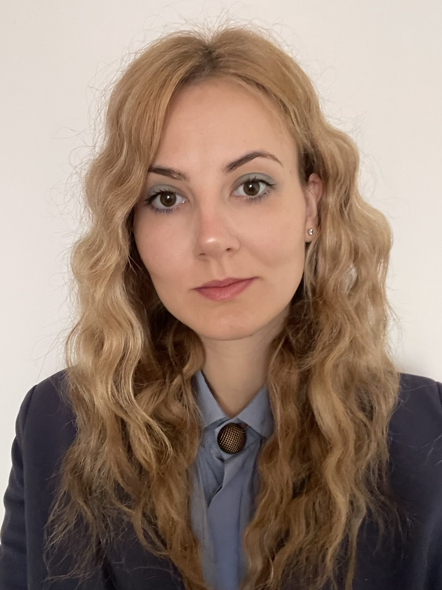

About Me

My name is Stefanija Ivošević. I was born in 1996 in Belgrade, Serbia, into a Serbian-Russian family, and grew up in Boleč, a small suburban place where I spent much of my childhood outdoors. I was a curious, energetic child who loved nature, climbing trees, riding my bike, jumping over little streams and playing outdoor games with friends. I also had a special soft spot for cats, which has never really changed.
When I could not be outside, I would often sit by the window, daydreaming and asking myself questions like what would happen if I dug a very deep hole into the ground, or whether following the small stream near my garden would eventually lead me to the sea, which I have always loved. I was always interested in understanding why things are the way they are, and that quiet sense of curiosity gradually shaped the way I approached learning and the world around me.
I started school one year earlier, at the age of six. Around that time, my parents noticed my musicality, so when I was eight I began playing the violin. Soon after, I also joined the choir of the National Theatre in Belgrade, where we performed in operas such as Carmen and Pagliacci. Those early school years remain a vivid memory for me, shaped by music, discipline, imagination and a growing love for learning.
Mathematics was always present as well. I was naturally drawn to problem solving, patterns and logical thinking, and it never felt like something to memorize, but rather something to explore. By the end of primary school, I participated in a city-level mathematics competition. Although I had enough points to choose almost any high school, I enrolled in the Aviation Academy in Belgrade because aviation genuinely fascinated me and I was drawn to the uniqueness of that environment.
I truly enjoyed my time at the Aviation Academy, but it was also where I clearly realized that mathematics was my strongest side. During high school, I became known as someone who could explain problems clearly and help others understand them. By the end of my second year, I already knew that I wanted to study mathematics.
At first, I imagined that mathematics would lead me toward teaching, which I also enjoyed. However, when I discovered the Statistics, Actuarial and Financial Mathematics program at the Faculty of Mathematics, University of Belgrade, I was immediately attracted to the idea of probability, uncertainty and mathematical reasoning applied to real-world phenomena. I did not yet fully understand where that path would take me, but it felt exciting.
My time at university was a real rollercoaster. There were challenging periods, but also many moments of genuine enjoyment in learning. Over time, I gained a deeper perspective on mathematics, seeing it not only as formulas and theory, but as a way to describe structure, uncertainty and patterns. Statistics became especially meaningful to me through courses in probability theory, mathematical statistics, regression analysis, stochastic processes, time series, sampling methods, statistical inference and statistical software.
At the same time, I discovered that programming came naturally to me. Working with languages and tools such as R, Python, SQL and SAS allowed me to implement statistical methods, manipulate data and connect theory with practical applications.
Near the end of my studies, I worked as a substitute mathematics and computer science teacher, and I also spent several months as an ERP developer. That experience was valuable, especially because I worked with great people and learned about software implementation, Git, testing and business systems. However, I realized that pure software development was not my calling. I missed statistics, data and analytical thinking.
In 2023, I graduated from the Faculty of Mathematics and soon after joined the Statistical Office of the Republic of Serbia as a Survey Analyst in the sampling methodology group. In this role, I worked on sample-based statistical surveys, focusing on representative sampling, frame construction, stratification, allocation, weighting, estimation and reporting. A significant part of my work was done in SAS, R, SQL and Excel.
Through this work, I came to better understand how important methodology is when data is used to represent an entire population. I also had the opportunity to travel to the Netherlands for work related to the classification of activities, where I visited Statistics Netherlands in The Hague and met professionals from statistical offices across Europe. That experience broadened my perspective on how meaningful, international and methodologically demanding work with data can be.
Although this role was valuable and intellectually engaging, I began to feel that I needed a more dynamic environment where I could explore, build, test ideas and push my analytical thinking further. This led me to start exploring machine learning and Data Science on my own. I was fascinated by how algorithms learn from data, how artificial intelligence works and how models can detect structure that is not immediately visible.
The more I studied, the more I realized that Data Science naturally brings together two things I truly enjoy: statistics and programming. It felt like a continuation of everything I had been building toward, but also a step into something more creative, dynamic and open-ended.
In 2025, I enrolled in the MSc program in Information Engineering at the Faculty of Organizational Sciences, University of Belgrade, drawn by its diverse and modern curriculum in machine learning, big data, data science foundations and applied analytics. During my studies, my interest and dedication only deepened, and I completed all exams with the highest grade, 10.0. Along the way, I had the opportunity to meet inspiring professors and colleagues who share a genuine passion for Data Science.
My master thesis focuses on the robustness of deep learning models for 6D object grasp pose estimation using degraded RGB-D data and point clouds. Through this work, I am exploring how models behave when data is noisy, incomplete, partially occluded or degraded, which I see as one of the most important challenges in real-world Data Science and robotics.
At this stage, I see Data Science as the direction I want to fully commit to and grow within. I want to continue learning, working with data, building models and contributing to problems where thoughtful analysis can create real value. For me, Data Science is not just a career path, but a field where my curiosity, analytical mindset and desire to contribute naturally come together.
Education
MSc in Information Engineering
Faculty of Organizational Sciences, University of Belgrade
Status: MSc student, all exams completed with the highest grade, 10.0.
Relevant courses: Development of Machine Learning Algorithms, Application of Machine Learning Algorithms, Machine Learning on Big Data, Mathematical Foundations of Data Science, Data-Oriented Software Development, Applied Analytics.
BSc in Statistics, Actuarial and Financial Mathematics
Faculty of Mathematics, University of Belgrade
Relevant courses: Probability Theory, Mathematical Statistics, Regression Analysis, Linear Statistical Models, Time Series, Random Processes, Stochastic Processes in Operations Research, Sampling Methods, Information Theory, Statistical Software I-IV, Elements of Actuarial Mathematics, Operations Research.
Experience
Survey Analyst
Statistical Office of the Republic of Serbia | Sampling Methodology Group
Worked on sample-based statistical surveys, including sample frame preparation, stratification, allocation, sample selection, weighting, estimation and reporting. Used SAS, R, SQL and Excel to prepare data, support sampling procedures and calculate statistical indicators for official statistical processes.
ERP Developer
NPS - A Noventiq Company
Participated in software implementation and customization of ERP solutions based on Microsoft Dynamics 365 Business Central. Gained experience with Git, testing, debugging and understanding how business processes are translated into software systems.
Mathematics and Informatics Teacher
Primary and Secondary Schools
Taught mathematics and informatics, explained complex concepts to students and developed strong communication, mentoring and problem-solving skills. This experience also strengthened my ability to present technical ideas clearly and patiently.
Skills
Python
Pandas, NumPy, Scikit-learn, Matplotlib, Seaborn, data cleaning, exploratory data analysis, feature engineering, model training and model evaluation.
Machine Learning
Classification, regression, clustering, ensemble methods, Naive Bayes, Linear Regression, KMeans, AdaBoost, train/test split, cross-validation, hyperparameter tuning, metrics and interpretation.
Statistics
Probability theory, statistical inference, regression analysis, linear statistical models, sampling methods, weighting, estimation, confidence intervals, time series and stochastic processes.
R
dplyr, tidyr, ggplot2, haven, lubridate, cluster, factoextra, SamplingStrata, sampling, data manipulation, statistical analysis, visualization and reporting.
SQL
SELECT queries, filtering, joins, grouping, aggregation, subqueries, common table expressions, data validation, analytical reporting and working with relational data.
SAS
PROC IMPORT, PROC SQL, PROC SUMMARY, data step processing, data preparation, survey methodology support, sample-based analysis and official statistical reporting.
Big Data
Spark, PySpark, Spark DataFrames, Spark SQL, Spark ML, distributed data processing, large-scale data transformation and machine learning workflows on bigger datasets.
Deep Learning
Neural network concepts, model training, model robustness, point cloud data, RGB-D data, introductory PyTorch workflows and understanding of deep learning models used in robotic grasp detection.
NLP
Text preprocessing, tokenization, feature extraction, TF-IDF, sentiment analysis, text classification and working with unstructured textual data.
Data Visualization
Matplotlib, Seaborn, ggplot2, Excel charts, Tableau and Power BI for exploratory visualization, dashboards and communication of analytical results.
Data Science Workflow
Problem understanding, data cleaning, exploratory data analysis, feature engineering, modeling, evaluation, interpretation and clear communication of results.
Tools
Git, GitHub, Jupyter Notebook, Spyder, VS Code, Excel, Tableau, Power BI and basic software implementation experience from ERP development.
Projects
Featured Project
Machine Learning Algorithms from Scratch
This project presents the development and explanation of four fundamental machine learning algorithms: Naive Bayes, Linear Regression, KMeans and AdaBoost.
The goal is to show how each algorithm works internally, starting from a basic implementation and gradually improving the code structure, evaluation and interpretation.
Algorithms: Naive Bayes, Linear Regression, KMeans, AdaBoost
Tools: Python, NumPy, Pandas, Matplotlib, Scikit-learn
Focus: algorithm development, theory, implementation and evaluation
Twitter Sentiment Analysis with PySpark
A natural language processing project focused on sentiment classification of Twitter text data. The project includes text preprocessing, feature extraction and machine learning models developed in PySpark.
Methods: text cleaning, tokenization, feature extraction, classification
Tools: Python, PySpark, Spark ML, NLP
Focus: multi-class sentiment classification
Movie Recommendation System with PySpark
A recommender system project based on movie rating data. The project analyzes user ratings, identifies popular movies and develops a recommendation approach using big data tools.
Methods: recommender systems, rating analysis, ranking
Tools: Python, PySpark, Spark SQL
Focus: movie recommendations and user preference analysis
Mercari Price Prediction
A machine learning project based on the Mercari Price Suggestion Challenge. The goal is to predict product prices using both tabular and textual features from online listings.
Methods: regression, text preprocessing, feature engineering, model comparison
Tools: Python, Pandas, Scikit-learn, LightGBM, NLP
Focus: price prediction from structured and unstructured data
Banking Transaction Pattern Analysis
An exploratory data analysis project focused on discovering patterns in banking transactions and customer account behavior.
Methods: data cleaning, feature creation, pivot tables, exploratory analysis
Tools: Python, Pandas, Matplotlib, Seaborn
Focus: customer behavior and transaction patterns
SQL and Tableau Projects
Planned portfolio section for SQL analysis and interactive Tableau dashboards. This section will include database queries, business metrics and visual reporting examples.
Methods: SQL querying, data modeling, dashboard design
Tools: SQL, Tableau, Excel
Focus: business analytics and data visualization
Master Thesis
Robustness Analysis of Deep Learning Models for 6D Object Grasp Pose Estimation
My master thesis investigates the robustness of deep learning models for 6D object grasp pose estimation based on degraded RGB-D data and point clouds. The research focuses on robotic grasping, where models use geometric information from point clouds to predict suitable grasp poses and estimate grasp quality.
The main idea is to analyze how model performance changes when input data becomes imperfect. This includes controlled degradations such as reduced point cloud density, noise in depth measurements, partial incompleteness, occlusion and differences between sensor domains.
The thesis considers models and approaches such as PointNetGPD, Contact-GraspNet, GSNet and AnyGrasp, with the goal of understanding how different model architectures react to degraded input data. The broader motivation is to evaluate how reliable these models could be in real robotic environments, where sensor data is rarely clean or complete.
Contact
I am interested in Data Science internships and Junior Data Scientist roles, especially in projects involving statistics, machine learning, model interpretation, big data, business analytics and applied data science.